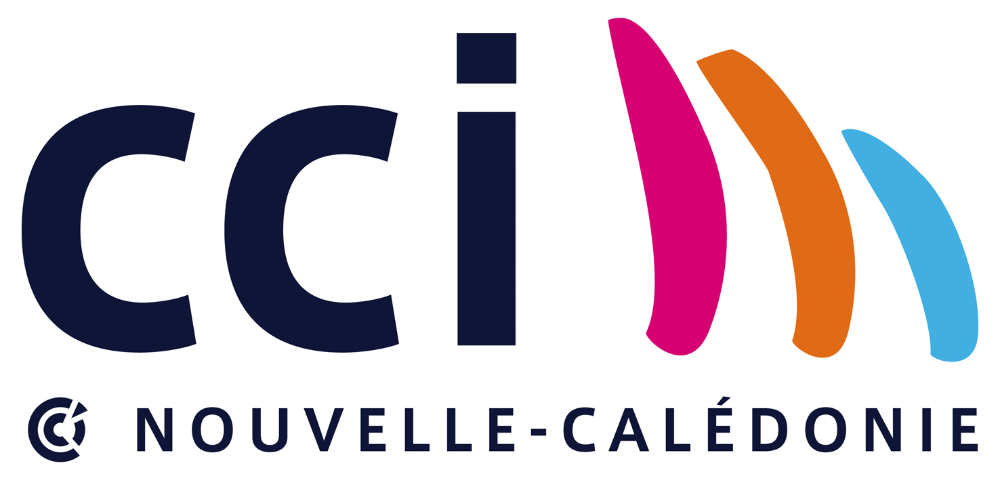
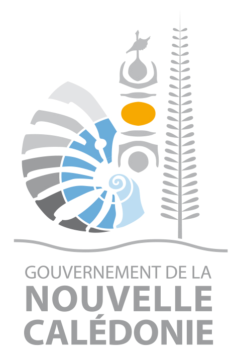
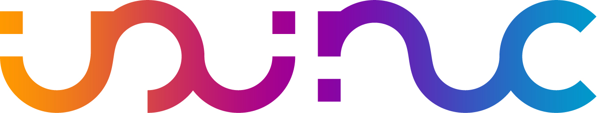
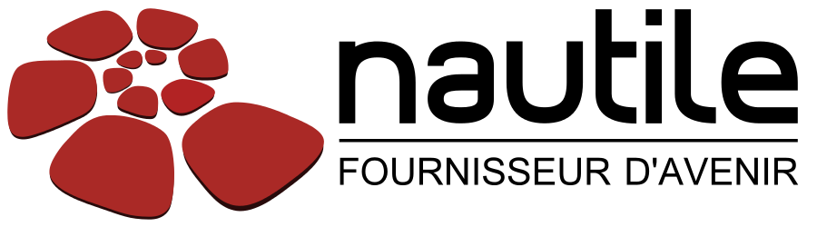
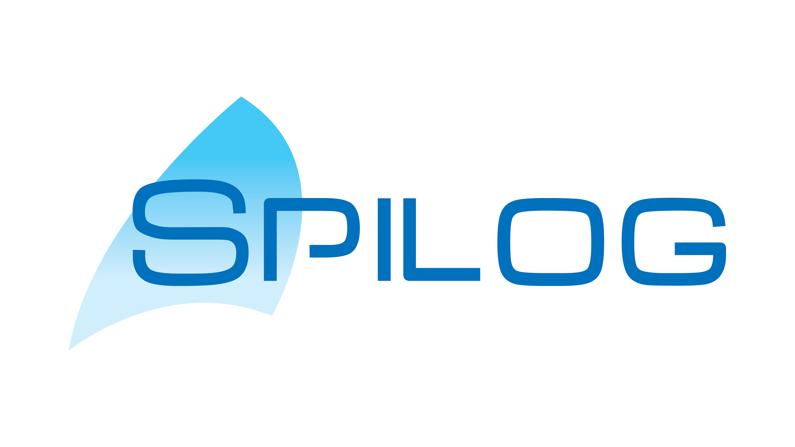
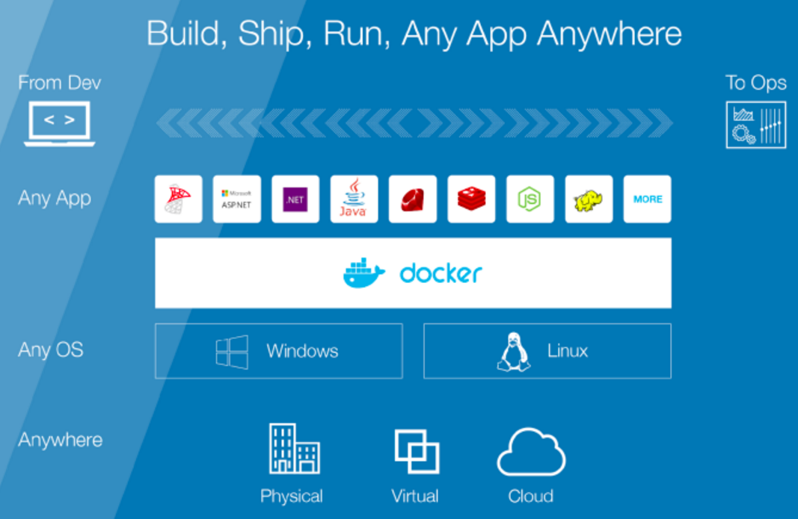
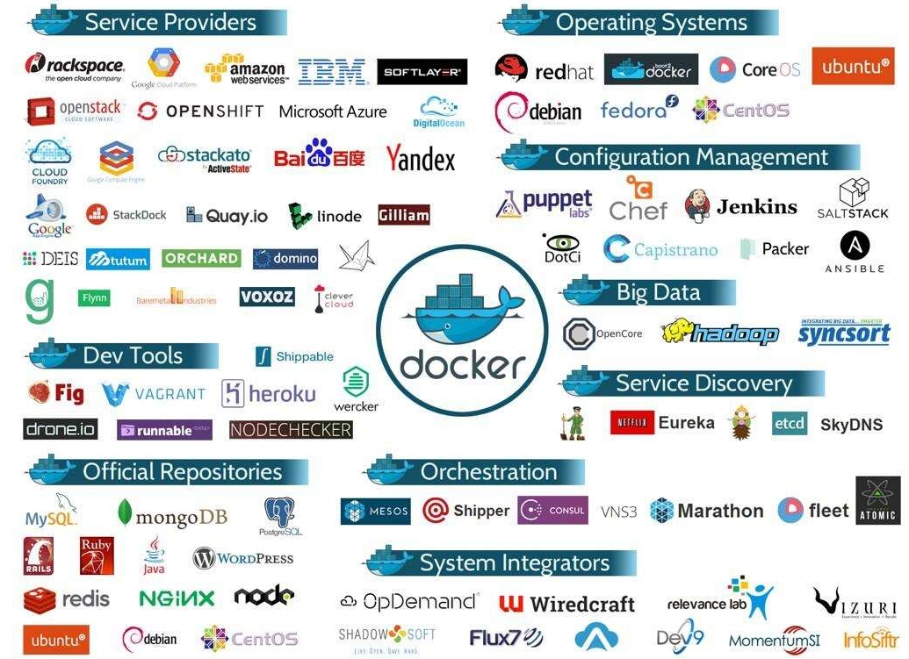

Le plan
- Le Docker Meetup
- Un peu d'Histoire
- Les concepts fondateurs
- Une adoption unanime
Le Docker Meetup : Le besoin
- Adoption de Docker en Calédonie en expansion
- Amène à repenser tout le SI
- Au carrefour de plusieurs métiers
- Nécessite de nouvelles approches et compétences
- Un changement difficile à faire seul
Le Docker Meetup : Une solution
- Proposer un espace d'échange sur Docker
- Partager des expériences
- Apprendre ensemble
- Mutualiser les efforts et les moyens
- Trouver des solutions communes
Le Docker Meetup : Concrètement
- Un évènement officiel Docker Inc.
- Des outils, du matériel, des ressources à disposition
- Plusieurs évènements dans l'année
- Plusieurs formats possibles : Conférences, ateliers pratiques,..
- Les points d'entrée
- Le site Meetup : Google : "Docker Meetup Noumea"
- Le Github : Google : "Docker Meetup Noumea Github"
Le Docker Meetup : Les partenaires
- Merci à la CCI
- Merci aux speakers
- Soyez speaker aux prochains évènements
- Merci aux partenaires





Le plan
- Le Docker Meetup
- Un peu d'Histoire
- Les concepts fondateurs
- Une adoption unanime
Un peu d'Histoire : le synopsis
- Bio Solomon Hykes
- Origine du projet
- La start-up qui aurait du être française
- Choix du Go
- Evolution éclair de l'adoption
- Un soupçon de stats

Un peu d'Histoire : l'ère dotCloud
- 2006 - Solomon Hykes diplômé de l'Epitech
- 2008 - création de dotCloud avec Sébastien Pahl
- Aucun finacement trouvé parmi les business angels français
- Le 1er virage : un changement géographique
- 2010 - Incubation au sein de Y Combinator
- Les start-up de Y Combinator comme early adopters
- "Go, c'est un peu la Suisse des langages modernes"
- 2011 - implantation dans la Silicon Valley
- Demandes récurrentes d'accès à des briques légo du socle dotCloud

Un peu d'Histoire : l'ère Docker
- Le 2ème virage : un changement stratégique
- Modularisation des services internes du PaaS doCloud
- 2013 - ouverture de Docker à l'open source
- Mars 2013 - lancement de Docker Hub
- Septembre 2013 - Red Hat l'intègre à OpenShift
- Fin 2014 - Adoption par Microsoft, Google, Amazon, IBM
- Septembre 2015 - 40% des usages en production
- Novembre 2015 - 1.2 milliards de pulls
- Février 2016 - 2 milliards de pulls / 7000 par min
- Democratisation des PaaS et Caas privés

Le plan
- Un peu d'Histoire
- Les concepts fondateurs
- Une adoption unanime
Les concepts fondateurs
- L'allégorie du container
- Le slogan devOPS
- Le container linux LXC
- En résumé
Concepts fondateurs : L'allégorie du container

Concepts fondateurs : L'allégorie du container

Concepts fondateurs : L'allégorie du container

Concepts fondateurs : L'allégorie du container

Concepts fondateurs : L'allégorie du container

Concepts fondateurs : L'allégorie du container

Concepts fondateurs : L'allégorie du container
Double abstraction du container

Concepts fondateurs : L'allégorie du container
Double abstraction du container Docker

Concepts fondateurs : Le slogan devOPS
"Build, Ship, Run, Any App Anywhere"


Concepts fondateurs : Le slogan devOPS
"Build, Ship, Run, Any App Anywhere"

Concepts fondateurs : Le container linux LXC
Container vs VM

- Une technologie Linux-only
- Le kernel linux de l'hôte partagé avec les containers
- Un container = un processus linux isolé sur un hôte linux
Concepts fondateurs : En résumé
- Un mode de virtualisation léger et rapide
- Initialement basé sur les containers linux LXC
- Une execution isolée
- Avec maitrise des flux (port, montage disque, réseau)
- Un mécanisme de gestion de configuration
- Avec des scripts d'installation versionnés
- Un outil de déploiement sur étagère simple et intégré
- Avec un dépôt central des images à installer
Le plan
- Le Docker Meetup
- Un peu d'Histoire
- Les concepts fondateurs
- Une adoption unanime
Une adoption unanime : l'ecosystème partenaire
